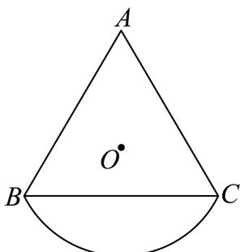
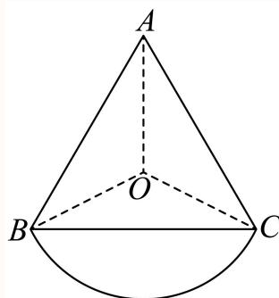
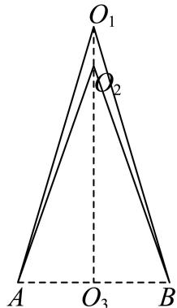
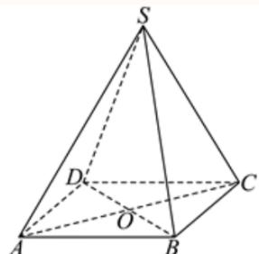
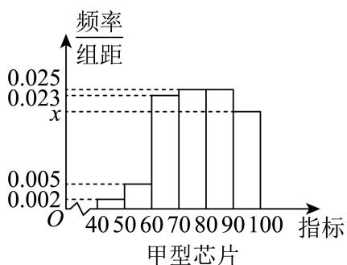
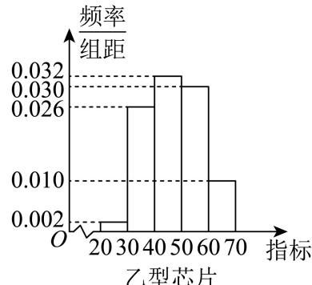
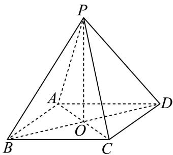
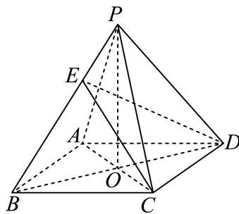
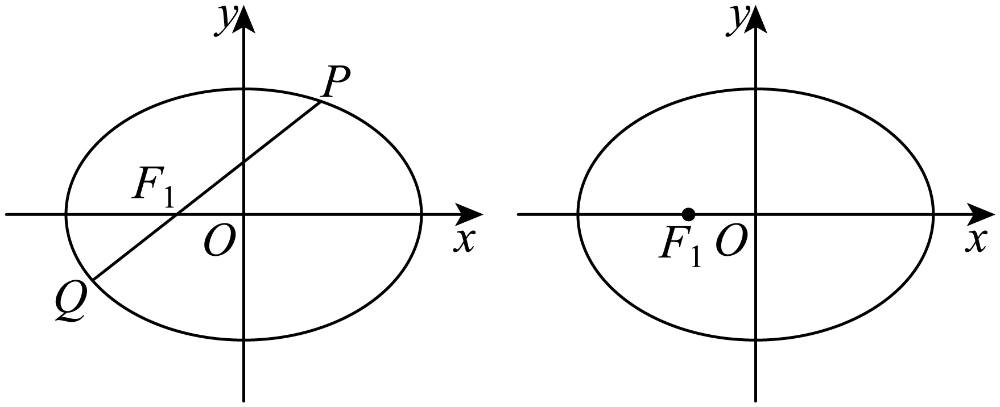
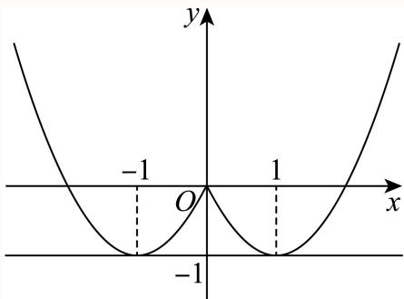

填空题 按本区原卷题号顺序排列。
奉贤 · 第1题 ★☆☆☆☆ · 教师预估 本题资料或解析有待核事项，预览不可作为已审定成品。
设全集 U = { 1 , 2 , 3 , 4 } U=\{1,2,3,4\} U = { 1 , 2 , 3 , 4 } A = { 2 , 4 } A=\{2,4\} A = { 2 , 4 } A ‾ = \overline A= A =
考点： 有限集合的补集运算。难度依据： 按全集删除集合已有元素
核查说明： 仅核本题所列字段及页面；不等于全卷终审。；题干与解析已用于人工归类，尚未完成整题公式校净与独立数学终审。；题干补集横线漏识；同名PDF第1页文字层确认是A的补集。
展开答案与解析 【答案】{1, 3}.
【解析】
利用补集的定义可得出结合A.–
因为全集U = {1, 2, 3, 4}，集合 A = { 2 , 4 } A = \{ 2 , 4 \} A = { 2 , 4 } A ‾ = { 1 , 3 } \overline { { A } } = \{ 1 , 3 \} A = { 1 , 3 }
故答案为：{1, 3}.
奉贤 · 第2题 ★☆☆☆☆ · 教师预估 若直线 l 1 : x + a y − 2 = 0 l_1:x+ay-2=0 l 1 : x + a y − 2 = 0 l 2 : a x + y − 2 = 0 l_2:ax+y-2=0 l 2 : a x + y − 2 = 0 a = a= a =
考点： 一般式直线垂直的系数条件。难度依据： 用系数内积为零避免漏斜率不存在情形
核查说明： 题干与解析已用于人工归类，尚未完成整题公式校净与独立数学终审。
展开答案与解析 【答案】0
【解析】
根据直线互相垂直求出a的值.
由题意得 1 × a + a × 1 = 0 1 \times a + a \times 1 = 0 1 × a + a × 1 = 0
故答案为：0
奉贤 · 第3题 ★☆☆☆☆ · 教师预估 已知 x ∈ R x\in\mathbb R x ∈ R x 2 − x + 2 > 0 x^2-x+2>0 x 2 − x + 2 > 0 ‾ \underline{\qquad}
考点： 判别式判断二次不等式恒正。难度依据： 二次项正且判别式负
核查说明： 题干与解析已用于人工归类，尚未完成整题公式校净与独立数学终审。
展开答案与解析 【答案】R \mathbb R R
【解析】
利用二次函数的判别式的符号，判断不等式恒成立。
因为 Δ = 1 − 8 = − 7 < 0 \Delta=1-8=-7<0 Δ = 1 − 8 = − 7 < 0 x 2 − x + 2 > 0 x^2-x+2>0 x 2 − x + 2 > 0 R \mathbb R R
故答案为：R \mathbb R R
奉贤 · 第4题 ★★☆☆☆ · 教师预估 本题资料或解析有待核事项，预览不可作为已审定成品。
设 f ( x ) = { ln x + 1 , x > 0 , 2 x + 1 , x ≤ 0. f(x)=\begin{cases}\ln x+1,&x>0,\\2^x+1,&x\leq 0.\end{cases} f ( x ) = { ln x + 1 , 2 x + 1 , x > 0 , x ≤ 0. f ( x 0 ) = 1 f(x_0)=1 f ( x 0 ) = 1 x 0 = x_0= x 0 =
考点： 分段指数对数函数的给值求自变量。难度依据： 须分别检查两段方程与区间
核查说明： 题干与解析已用于人工归类，尚未完成整题公式校净与独立数学终审。；题干分段函数缺少x>0时ln x+1这一整支；已定向下载同名PDF，第1页文字层确认两支为ln x+1(x>0)、2^x+1(x≤0)，本分类未改底稿。
展开答案与解析 【答案】1 1 1
【解析】
根据分段函数，分 x 0 > 0 x_0>0 x 0 > 0 x 0 ≤ 0 x_0\le0 x 0 ≤ 0
当 x 0 > 0 x_0>0 x 0 > 0 f ( x 0 ) = ln x 0 + 1 = 1 f(x_0)=\ln x_0+1=1 f ( x 0 ) = ln x 0 + 1 = 1 x 0 = 1 x_0=1 x 0 = 1
当 x 0 ≤ 0 x_0\le0 x 0 ≤ 0 f ( x 0 ) = 2 x 0 + 1 = 1 f(x_0)=2^{x_0}+1=1 f ( x 0 ) = 2 x 0 + 1 = 1
所以 x 0 = 1 x_0=1 x 0 = 1
故答案为：1 1 1
奉贤 · 第5题 ★☆☆☆☆ · 教师预估 若 A , B , C , D , E A,B,C,D,E A , B , C , D , E A , B A,B A , B ‾ \underline{\qquad}
考点： 相邻排列的捆绑法。难度依据： 整体排列后补内部排列
核查说明： 题干与解析已用于人工归类，尚未完成整题公式校净与独立数学终审。
展开答案与解析 【答案】48 48 48
【解析】
元素相邻问题运用捆绑法求解。
第一步：把 A , B A,B A , B C , D , E C,D,E C , D , E A 4 4 \mathrm A_4^4 A 4 4
第二步：A , B A,B A , B A 2 2 \mathrm A_2^2 A 2 2
根据分步计数原理可知，排法的总数共有 A 4 4 A 2 2 = 48 \mathrm A_4^4\mathrm A_2^2=48 A 4 4 A 2 2 = 48
故答案为：48 48 48
奉贤 · 第6题 ★★☆☆☆ · 教师预估 ( x 6 + 1 x x ) 5 \left(x^6+\frac{1}{x\sqrt{x}}\right)^5 ( x 6 + x x 1 ) 5 ‾ \underline{\qquad}
考点： 含分数指数的二项展开常数项。难度依据： 准确列指数并令其为零
核查说明： 题干与解析已用于人工归类，尚未完成整题公式校净与独立数学终审。
展开答案与解析 【答案】5 5 5
【解析】
写出展开式的通项，令 x x x 0 0 0
由题意可知：
T r + 1 = C 5 r x 30 − 6 r ( 1 x x ) r = C 5 r x 30 − 6 r x − 3 2 r = C 5 r x 30 − 15 2 r .
T_{r+1}=\mathrm C_5^r x^{30-6r}\left(\frac{1}{x\sqrt{x}}\right)^r=\mathrm C_5^r x^{30-6r}x^{-\frac32r}=\mathrm C_5^r x^{30-\frac{15}{2}r}.
T r + 1 = C 5 r x 30 − 6 r ( x x 1 ) r = C 5 r x 30 − 6 r x − 2 3 r = C 5 r x 30 − 2 15 r .
令 30 − 15 2 r = 0 30-\frac{15}{2}r=0 30 − 2 15 r = 0 r = 4 r=4 r = 4 C 5 4 = 5 \mathrm C_5^4=5 C 5 4 = 5
故答案为：5 5 5
奉贤 · 第7题 ★★☆☆☆ · 教师预估 已知抛物线 x 2 = a y ( a > 0 ) x^2=ay\left(a>0\right) x 2 = a y ( a > 0 ) P P P 6 6 6 P P P x x x 4 4 4 ‾ \underline{\qquad}
考点： 抛物线准线距离与焦点参数。难度依据： 先定纵坐标再用准线距离反求参数
核查说明： 题干与解析已用于人工归类，尚未完成整题公式校净与独立数学终审。
展开答案与解析 【答案】( 0 , 2 ) (0,2) ( 0 , 2 )
【解析】
根据题意求出点 P P P P P P a a a
抛物线 x 2 = a y ( a > 0 ) x^2=ay\left(a>0\right) x 2 = a y ( a > 0 ) y = − a 4 y=-\frac a4 y = − 4 a
设点 P ( x , y ) P(x,y) P ( x , y ) y ≥ 0 y\geq0 y ≥ 0 P P P y + a 4 = 6 y+\frac a4=6 y + 4 a = 6 y = 6 − a 4 y=6-\frac a4 y = 6 − 4 a
因为点 P P P x x x 4 4 4 y = 4 y=4 y = 4 6 − a 4 = 4 6-\frac a4=4 6 − 4 a = 4 a = 8 a=8 a = 8
故抛物线的方程为 x 2 = 8 y x^2=8y x 2 = 8 y ( 0 , 2 ) (0,2) ( 0 , 2 )
故答案为：( 0 , 2 ) (0,2) ( 0 , 2 )
奉贤 · 第8题 ★★☆☆☆ · 教师预估 本题资料或解析有待核事项，预览不可作为已审定成品。
在复平面内，O O O z 1 = i ( − 4 − 3 i ) z_1=\mathrm i(-4-3\mathrm i) z 1 = i ( − 4 − 3 i ) z 2 = 12 + 5 i z_2=12+5\mathrm i z 2 = 12 + 5 i Z 1 , Z 2 Z_1,Z_2 Z 1 , Z 2 i \mathrm i i ⟨ O Z 1 → , O Z 2 → ⟩ \langle\overrightarrow{OZ_1},\overrightarrow{OZ_2}\rangle ⟨ O Z 1 , O Z 2 ⟩
考点： 复数运算与复平面坐标；坐标数量积求向量夹角。难度依据： 复数乘法转坐标后求余弦与夹角
核查说明： 仅核本题所列字段及页面；不等于全卷终审。；题干与解析已用于人工归类，尚未完成整题公式校净与独立数学终审。；题干夹角括号缺失，需规范向量夹角符号。
展开答案与解析 【解析】
由复数乘法运算求得 z 1 z_1 z 1 O Z 1 → , O Z 2 → \overrightarrow{OZ_1},\overrightarrow{OZ_2} O Z 1 , O Z 2 cos ⟨ O Z 1 → , O Z 2 → ⟩ \cos\langle\overrightarrow{OZ_1},\overrightarrow{OZ_2}\rangle cos ⟨ O Z 1 , O Z 2 ⟩ ⟨ O Z 1 → , O Z 2 → ⟩ \langle\overrightarrow{OZ_1},\overrightarrow{OZ_2}\rangle ⟨ O Z 1 , O Z 2 ⟩
因为 z 1 = i ( − 4 − 3 i ) = 3 − 4 i z_1=\mathrm i(-4-3\mathrm i)=3-4\mathrm i z 1 = i ( − 4 − 3 i ) = 3 − 4 i z 2 = 12 + 5 i z_2=12+5\mathrm i z 2 = 12 + 5 i
所以 O Z 1 → = ( 3 , − 4 ) \overrightarrow{OZ_1}=(3,-4) O Z 1 = ( 3 , − 4 ) O Z 2 → = ( 12 , 5 ) \overrightarrow{OZ_2}=(12,5) O Z 2 = ( 12 , 5 )
cos ⟨ O Z 1 → , O Z 2 → ⟩ = O Z 1 → ⋅ O Z 2 → ∣ O Z 1 → ∣ ∣ O Z 2 → ∣ = 3 × 12 − 20 3 2 + ( − 4 ) 2 × 1 2 2 + 5 2 = 16 65 ,
\cos\left\langle\overrightarrow{OZ_1},\overrightarrow{OZ_2}\right\rangle=\frac{\overrightarrow{OZ_1}\cdot\overrightarrow{OZ_2}}{\left|\overrightarrow{OZ_1}\right|\left|\overrightarrow{OZ_2}\right|}=\frac{3\times12-20}{\sqrt{3^2+(-4)^2}\times\sqrt{12^2+5^2}}=\frac{16}{65},
cos ⟨ O Z 1 , O Z 2 ⟩ = O Z 1 O Z 2 O Z 1 ⋅ O Z 2 = 3 2 + ( − 4 ) 2 × 1 2 2 + 5 2 3 × 12 − 20 = 65 16 ,
所以 ⟨ O Z 1 → , O Z 2 → ⟩ = arccos 16 65 \langle\overrightarrow{OZ_1},\overrightarrow{OZ_2}\rangle=\arccos\frac{16}{65} ⟨ O Z 1 , O Z 2 ⟩ = arccos 65 16
奉贤 · 第9题 ★★☆☆☆ · 教师预估 甲乙两人下棋，每局两人获胜的可能性一样，某一天两人要进行一场三局两胜的比赛，最终胜者赢得100元奖金，第一局比赛甲获胜，后因为有其他事情而中止比赛，则甲应该分 ‾ \underline{\qquad}
考点： 中止赛制的条件胜率和公平分奖。难度依据： 当前比分下用乙再连胜的补事件
核查说明： 题干与解析已用于人工归类，尚未完成整题公式校净与独立数学终审。
展开答案与解析 【答案】75 75 75
【解析】
分别求出甲、乙最终获胜的概率，即可求出答案。
乙最后获胜的情况为第二局、第三局必须乙胜，其概率为 1 2 × 1 2 = 1 4 \frac12\times\frac12=\frac14 2 1 × 2 1 = 4 1
即甲最终获胜的概率为 3 4 \frac34 4 3 1 4 \frac14 4 1
故甲的奖金为 100 × 3 4 = 75 100\times\frac34=75 100 × 4 3 = 75
故答案为：75 75 75
奉贤 · 第10题 ★★★☆☆ · 教师预估 申辉中学高一（8）班设计了一个“水滴状”班徽的平面图（如图），徽章由等腰三角形 A B C ABC A BC B C BC BC B C BC BC A B = A C AB=AC A B = A C B C BC BC O O O

∠ B A C = θ \angle BAC=\theta ∠ B A C = θ θ ∈ ( 0 , π 2 ) \theta\in\left(0,\frac{\pi}{2}\right) θ ∈ ( 0 , 2 π ) 2 2 2 ‾ \underline{\qquad} θ \theta θ 考点： 圆心角圆周角与扇形三角形面积建模。难度依据： 分割复合图形并用圆周角关系表示面积
核查说明： 题干与解析已用于人工归类，尚未完成整题公式校净与独立数学终审。
展开答案与解析 【答案】4 θ + 4 sin θ 4\theta+4\sin\theta 4 θ + 4 sin θ
【解析】
连接 O B , O A , O C OB,OA,OC OB , O A , OC S △ A O B S_{\triangle AOB} S △ A OB S △ A O C S_{\triangle AOC} S △ A OC S 扇形 B O C S_{\text{扇形}BOC} S 扇形 BOC
连接 O B , O A , O C OB,OA,OC OB , O A , OC O B = O A = O C = 2 OB=OA=OC=2 OB = O A = OC = 2 ∠ B O C = 2 θ \angle BOC=2\theta ∠ BOC = 2 θ
∠ A O B = ∠ A O C = 2 π − ∠ B O C 2 = π − θ ,
\angle AOB=\angle AOC=\frac{2\pi-\angle BOC}{2}=\pi-\theta,
∠ A OB = ∠ A OC = 2 2 π − ∠ BOC = π − θ ,
S △ A O B = S △ A O C = 1 2 × 2 × 2 sin ( π − θ ) = 2 sin θ ,
S_{\triangle AOB}=S_{\triangle AOC}=\frac{1}{2}\times2\times2\sin(\pi-\theta)=2\sin\theta,
S △ A OB = S △ A OC = 2 1 × 2 × 2 sin ( π − θ ) = 2 sin θ ,
S 扇形 B O C = 1 2 × 2 θ × 2 × 2 = 4 θ ,
S_{\text{扇形}BOC}=\frac{1}{2}\times2\theta\times2\times2=4\theta,
S 扇形 BOC = 2 1 × 2 θ × 2 × 2 = 4 θ ,
所以该图形的面积为 4 θ + 4 sin θ 4\theta+4\sin\theta 4 θ + 4 sin θ
故答案为：4 θ + 4 sin θ 4\theta+4\sin\theta 4 θ + 4 sin θ

奉贤 · 第11题 ★★☆☆☆ · 教师预估 上海市奉贤区奉城镇的古建筑万佛阁（图1）的屋檐下常系挂风铃（图2），风吹铃动，悦耳清脆，亦称惊鸟铃，一般一个惊鸟铃由铜铸造而成，由铃身和铃舌组成，为了知道一个惊鸟铃的质量，可以通过计算该惊鸟铃的体积，然后由物理学知识计算出该惊鸟铃的质量，因此我们需要作出一些合理的假设：O 1 O 3 = 20 c m O_1O_3=20\,\mathrm{cm} O 1 O 3 = 20 cm O 2 O 3 = 18 c m O_2O_3=18\,\mathrm{cm} O 2 O 3 = 18 cm A B = 16 c m AB=16\,\mathrm{cm} A B = 16 cm ‾ \underline{\qquad} 8.9 g / c m 3 8.9\,\mathrm{g/cm^3} 8.9 g/c m 3

考点： 圆锥挖空体积与质量估算。难度依据： 作两个圆锥体积差后处理密度与单位
核查说明： 题干与解析已用于人工归类，尚未完成整题公式校净与独立数学终审。
展开答案与解析 【来源解析版答案】120 120 120
【解析】
两圆锥的底面半径均为 8 c m 8\,\mathrm{cm} 8 cm 20 c m 20\,\mathrm{cm} 20 cm 18 c m 18\,\mathrm{cm} 18 cm
100 × 1 3 π × 8 2 × ( 20 − 18 ) × 8.9 ÷ 1000 = 2848 π 75 ≈ 119.297 k g 100\times\frac{1}{3}\pi\times 8^2\times(20-18)\times 8.9\div1000=\frac{2848\pi}{75}\approx119.297\,\mathrm{kg} 100 × 3 1 π × 8 2 × ( 20 − 18 ) × 8.9 ÷ 1000 = 75 2848 π ≈ 119.297 kg
【审校说明】来源解析以 π ≈ 3.14 \pi\approx3.14 π ≈ 3.14 119.236 k g 119.236\,\mathrm{kg} 119.236 kg 120 120 120 120 k g 120\,\mathrm{kg} 120 kg 119 k g 119\,\mathrm{kg} 119 kg
奉贤 · 第12题 ★★★★☆ · 教师预估 本题资料或解析有待核事项，预览不可作为已审定成品。
已知集合 M = { P 0 , P 1 , P 2 , ⋯ , P n } M=\{P_0,P_1,P_2,\cdots,P_n\} M = { P 0 , P 1 , P 2 , ⋯ , P n } n ≥ 2 n\geq2 n ≥ 2 n ∈ N n\in\mathbb N n ∈ N y = cos x y=\cos x y = cos x x ∈ [ 0 , 2 π ] x\in[0,2\pi] x ∈ [ 0 , 2 π ] S = { a ∣ a = O P 0 → ⋅ O P i → , i = 0 , 1 , 2 , ⋯ , n , n ≥ 2 , n ∈ N } S=\{a\mid a=\overrightarrow{OP_0}\cdot\overrightarrow{OP_i},\ i=0,1,2,\cdots,n,\ n\geq2,\ n\in\mathbb N\} S = { a ∣ a = O P 0 ⋅ O P i , i = 0 , 1 , 2 , ⋯ , n , n ≥ 2 , n ∈ N } P 0 ( 0 , 1 ) P_0(0,1) P 0 ( 0 , 1 ) P 1 ( π , − 1 ) P_1(\pi,-1) P 1 ( π , − 1 ) S S S d d d d ∈ { 1 2 , 1 } d\in\left\{\frac12,1\right\} d ∈ { 2 1 , 1 } M M M
考点： 坐标数量积提取纵坐标；有限等差数列公差分类；余弦函数定值点枚举；有必选点约束的集合计数；点集到数集映射的重合与去重。难度依据： 公差两种情形下按同纵坐标点的非空选择计数
核查说明： 题干与解析已用于人工归类，尚未完成整题公式校净与独立数学终审。；原解多个余弦值与横坐标被错排，计数思路可辨但公式未校净。
展开答案与解析 【答案】60 60 60
【校订说明】以下解析依据题设重新整理，非来源解析逐字转录。
【解析】设 P i = ( x i , y i ) P_i=(x_i,y_i) P i = ( x i , y i ) O P 0 → ⋅ O P i → = y i = cos x i \overrightarrow{OP_0}\cdot\overrightarrow{OP_i}=y_i=\cos x_i O P 0 ⋅ O P i = y i = cos x i S ⊆ [ − 1 , 1 ] S\subseteq[-1,1] S ⊆ [ − 1 , 1 ] − 1 , 1 ∈ S -1,1\in S − 1 , 1 ∈ S
当 d = 1 d=1 d = 1 S = { − 1 , 0 , 1 } S=\{-1,0,1\} S = { − 1 , 0 , 1 } 0 0 0 3 3 3 P 0 P_0 P 0 1 1 1 ( 2 π , 1 ) (2\pi,1) ( 2 π , 1 ) 2 2 2 − 1 -1 − 1 P 1 P_1 P 1 2 × 3 = 6 2\times3=6 2 × 3 = 6
当 d = 1 2 d=\frac12 d = 2 1 S = { − 1 , − 1 2 , 0 , 1 2 , 1 } S=\left\{-1,-\frac12,0,\frac12,1\right\} S = { − 1 , − 2 1 , 0 , 2 1 , 1 } − 1 2 -\frac12 − 2 1 0 0 0 1 2 \frac12 2 1 3 3 3 ( 2 π , 1 ) (2\pi,1) ( 2 π , 1 ) 2 × 3 3 = 54 2\times3^3=54 2 × 3 3 = 54
两种情形互不重合，故所求为 6 + 54 = 60 6+54=60 6 + 54 = 60
选择题 按本区原卷题号顺序排列。
奉贤 · 第13题 ★★☆☆☆ · 教师预估 在 △ A B C \triangle ABC △ A BC C = π 2 C=\frac{\pi}{2} C = 2 π sin 2 A + sin 2 B = 1 \sin^2A+\sin^2B=1 sin 2 A + sin 2 B = 1
A. 充分不必要条件
B. 必要不充分条件
C. 充要条件
D. 既不充分也不必要条件
考点： 三角命题的充分必要性与反例；三角形内角关系及平方和恒等式。难度依据： 充分性用互余关系必要性需构造非直角反例
核查说明： 题干与解析已用于人工归类，尚未完成整题公式校净与独立数学终审。
展开答案与解析 【答案】A
【解析】
结合同角三角函数关系、诱导公式，分别从充分性、必要性两方面来说明即可。
一方面：
C = π 2 ⇒ A + B = π 2 ⇒ sin A = sin ( π 2 − B ) = cos B ,
C=\frac{\pi}{2}\Rightarrow A+B=\frac{\pi}{2}\Rightarrow\sin A=\sin\left(\frac{\pi}{2}-B\right)=\cos B,
C = 2 π ⇒ A + B = 2 π ⇒ sin A = sin ( 2 π − B ) = cos B ,
所以 sin 2 A + sin 2 B = cos 2 B + sin 2 B = 1 \sin^2A+\sin^2B=\cos^2B+\sin^2B=1 sin 2 A + sin 2 B = cos 2 B + sin 2 B = 1
另一方面，当 A = 2 π 3 A=\frac{2\pi}{3} A = 3 2 π B = C = π 6 B=C=\frac{\pi}{6} B = C = 6 π sin 2 A + sin 2 B = ( 3 2 ) 2 + ( 1 2 ) 2 = 1 \sin^2A+\sin^2B=\left(\frac{\sqrt3}{2}\right)^2+\left(\frac12\right)^2=1 sin 2 A + sin 2 B = ( 2 3 ) 2 + ( 2 1 ) 2 = 1 C ≠ π 2 C\ne\frac{\pi}{2} C = 2 π
所以“C = π 2 C=\frac{\pi}{2} C = 2 π sin 2 A + sin 2 B = 1 \sin^2A+\sin^2B=1 sin 2 A + sin 2 B = 1
故选：A。
奉贤 · 第14题 ★★★☆☆ · 教师预估 函数 y = log 2 sin x + log 2 cos x y = \log _ { 2 } \sin x + \log _ { 2 } \cos x y = log 2 sin x + log 2 cos x
A. 函数是偶函数
B. 函数定义域是 ( 0 , π 2 ) \left( 0 , { \frac { \pi } { 2 } } \right) ( 0 , 2 π )
C. 函数最大值−1
D. 函数的最小正周期为π
考点： 复合对数函数定义域与周期；正弦余弦同正区域及二倍角最值。难度依据： 周期不能只看化简式还需保留原定义域
核查说明： 题干与解析已用于人工归类，尚未完成整题公式校净与独立数学终审。
展开答案与解析 【答案】C
【解析】
求出函数f(x)的定义域，可判断AB选项；利用二倍角的正弦公式以及正弦函数的有界性可判断C选项；利用正弦型函数的周期性可判断D选项.
设 f ( x ) = log 2 sin x + log 2 cos x f \left( x \right) = \log _ { 2 } \sin x + \log _ { 2 } \cos x f ( x ) = log 2 sin x + log 2 cos x { sin x > 0 cos x > 0 \left\{ { \begin{array} { l } { \sin x > 0 } \\ { \cos x > 0 } \end{array} } \right. { sin x > 0 cos x > 0 2 k π < x < 2 k π + π 2 ( k ∈ Z ) 2 k \pi < x < 2 k \pi + { \frac { \pi } { 2 } } ( k \in { \bf Z } ) 2 kπ < x < 2 kπ + 2 π ( k ∈ Z )
所以，函数f(x)的定义域为 { x ∣ 2 k π < x < 2 k π + π 2 , k ∈ Z } \left\{ x \Big \vert 2 k \pi < x < 2 k \pi + \frac { \pi } { 2 } , k \in \mathbf { Z } \right\} { x 2 kπ < x < 2 kπ + 2 π , k ∈ Z }
所以，函数f(x)不是偶函数，A错B错；
当 2 k π < x < 2 k π + π 2 ( k ∈ Z ) 2 k \pi < x < 2 k \pi + \frac { \pi } { 2 } ( k \in { \bf Z } ) 2 kπ < x < 2 kπ + 2 π ( k ∈ Z ) 4 k π < 2 x < 4 k π + π ( k ∈ Z ) 4 k \pi < 2 x < 4 k \pi + \pi \left( k \in \mathbf { Z } \right) 4 kπ < 2 x < 4 kπ + π ( k ∈ Z )
f ( x ) = log 2 ( sin x cos x ) = log 2 ( 1 2 sin 2 x ) ≤ log 2 1 2 = − 1 ,
f (x) = \log_ {2} (\sin x \cos x) = \log_ {2} \left(\frac {1}{2} \sin 2 x\right) \leq \log_ {2} \frac {1}{2} = - 1,
f ( x ) = log 2 ( sin x cos x ) = log 2 ( 2 1 sin 2 x ) ≤ log 2 2 1 = − 1 ,
当且仅当 2 x = π 2 + 4 k π ( k ∈ Z ) 2 x = \frac { \pi } { 2 } + 4 k \pi \left( k \in \mathbf { Z } \right) 2 x = 2 π + 4 kπ ( k ∈ Z ) x = π 4 + 2 k π ( k ∈ Z ) x = { \frac { \pi } { 4 } } + 2 k \pi \left( k \in { \mathbf { Z } } \right) x = 4 π + 2 kπ ( k ∈ Z )
因为 f ( 2 π + x ) = log 2 sin ( 2 π + x ) + log 2 cos ( 2 π + x ) = log 2 sin x + log 2 cos x = f ( x ) f \left( 2 \pi + x \right) = \log _ { 2 } \sin \left( 2 \pi + x \right) + \log _ { 2 } \cos \left( 2 \pi + x \right) = \log _ { 2 } \sin x + \log _ { 2 } \cos x = f \left( x \right) f ( 2 π + x ) = log 2 sin ( 2 π + x ) + log 2 cos ( 2 π + x ) = log 2 sin x + log 2 cos x = f ( x )
结合函数f(x)的定义域可知，函数f(x)的最小正周期为2π，D错.故选：C.
奉贤 · 第15题 ★★★☆☆ · 教师预估 在四棱锥 S − A B C D S - A B C D S − A BC D S A → = x S B → + y S C → + z S D → \overrightarrow { S A } = x \overrightarrow { S B } + y \overrightarrow { S C } + z \overrightarrow { S D } S A = x SB + y SC + z S D
A. ( 1 , − 1 , 1 ) ( 1 , - 1 , 1 ) ( 1 , − 1 , 1 )
B. ( 1 , 0 , − 1 ) ( 1 , 0 , - 1 ) ( 1 , 0 , − 1 )
C. ( 1 , 0 , 0 ) ( 1 , 0 , 0 ) ( 1 , 0 , 0 )
D. ( 1 , − 1 , − 1 ) ( 1 , - 1 , - 1 ) ( 1 , − 1 , − 1 )
考点： 空间向量线性表示与共面约束；四棱锥底面形状的可实现性。难度依据： 向量线性式须检验能否构成真实四棱锥
核查说明： 题干与解析已用于人工归类，尚未完成整题公式校净与独立数学终审。
展开答案与解析 【答案】A
【解析】（根据题意审校重建，非来源解析逐字转录）

设底面所在平面的法向量为 n \boldsymbol n n S S S S A → ⋅ n ≠ 0 \overrightarrow{SA}\cdot\boldsymbol n\ne 0 S A ⋅ n = 0 A , B , C , D A,B,C,D A , B , C , D S A → , S B → , S C → , S D → \overrightarrow{SA},\overrightarrow{SB},\overrightarrow{SC},\overrightarrow{SD} S A , SB , SC , S D n \boldsymbol n n n \boldsymbol n n x + y + z = 1 x+y+z=1 x + y + z = 1
对于 C，等式变为 S A → = S B → \overrightarrow{SA}=\overrightarrow{SB} S A = SB A = B A=B A = B
对于 A，当底面 A B C D ABCD A BC D S A → + S C → = S B → + S D → \overrightarrow{SA}+\overrightarrow{SC}=\overrightarrow{SB}+\overrightarrow{SD} S A + SC = SB + S D S A → = S B → − S C → + S D → \overrightarrow{SA}=\overrightarrow{SB}-\overrightarrow{SC}+\overrightarrow{SD} S A = SB − SC + S D
故选 A。
奉贤 · 第16题 ★★★★☆ · 教师预估 本题资料或解析有待核事项，预览不可作为已审定成品。
已知数列 { a n } \left\{ a _ { n } \right\} { a n } S n , a n > 0 S _ { n } , \ a _ { n } > 0 S n , a n > 0 ∣ S n − a m ∣ < a 1 | S _ { n } - a _ { m } | < a _ { 1 } ∣ S n − a m ∣ < a 1 { a n } \left\{ a _ { n } \right\} { a n } { a n } \left\{ a _ { n } \right\} { a n } d = 3 d = 3 d = 3 { a n } \left\{ a _ { n } \right\} { a n } { a n } \left\{ a _ { n } \right\} { a n } q ∈ ( 0 , 1 2 ] q \in \left( 0 , \frac { 1 } { 2 } \right] q ∈ ( 0 , 2 1 ]
A. ①与②均为真命题
B. ①与②均为假命题
C. ①为假命题，②为真命题
D. ①为真命题，②为假命题
考点： 可控数列的等差反例与等比参数；全称存在量词下的数列逼近；绝对值邻近条件与几何和界。难度依据： 需理解每个n可另选m的量词并验证反例与参数
核查说明： 题干与解析已用于人工归类，尚未完成整题公式校净与独立数学终审。；原解排除q>1时疑似把“对每个n存在m”换成固定m后令n增大，量词证明需独立核查，不按原解直接定稿。
展开答案与解析 【答案】C
【解析】
对于①，取 a n = 3 n − 2 a_n=3n-2 a n = 3 n − 2 3 3 3 n = 2 n=2 n = 2 S 2 = 5 S_2=5 S 2 = 5 m m m
∣ S 2 − a m ∣ = ∣ 7 − 3 m ∣ ≥ 1 = a 1 . |S_2-a_m|=|7-3m|\geq 1=a_1. ∣ S 2 − a m ∣ = ∣7 − 3 m ∣ ≥ 1 = a 1 .
因此该数列不可控，①为假命题。
对于②，由各项为正且不是常数列，知 q > 0 q>0 q > 0 q ≠ 1 q\ne1 q = 1 T n = S n a 1 = q n − 1 q − 1 T_n=\frac{S_n}{a_1}=\frac{q^n-1}{q-1} T n = a 1 S n = q − 1 q n − 1 n n n m n m_n m n
∣ T n − q m n − 1 ∣ < 1. |T_n-q^{m_n-1}|<1. ∣ T n − q m n − 1 ∣ < 1.
若 q > 1 q>1 q > 1 q n q^n q n n → ∞ n\to\infty n → ∞
q m n − n − 1 ⟶ 1 q − 1 . q^{m_n-n-1}\longrightarrow\frac1{q-1}. q m n − n − 1 ⟶ q − 1 1 .
由于 q q q m n − n − 1 m_n-n-1 m n − n − 1 k k k q k = 1 q − 1 q^k=\frac1{q-1} q k = q − 1 1 n n n
∣ T n − q m n − 1 ∣ = 1 q − 1 < 1 , |T_n-q^{m_n-1}|=\frac1{q-1}<1, ∣ T n − q m n − 1 ∣ = q − 1 1 < 1 ,
从而 q > 2 q>2 q > 2 1 q < 1 q − 1 < 1 \frac1q<\frac1{q-1}<1 q 1 < q − 1 1 < 1 ( 1 q , 1 ) (\frac1q,1) ( q 1 , 1 ) q q q q > 1 q>1 q > 1
若 0 < q < 1 0<q<1 0 < q < 1 T n ≥ 1 T_n\geq1 T n ≥ 1 m m m q m − 1 ≤ 1 q^{m-1}\leq1 q m − 1 ≤ 1 n n n T n < 2 T_n<2 T n < 2 T n − q m − 1 < 1 T_n-q^{m-1}<1 T n − q m − 1 < 1 m = 1 m=1 m = 1 T n = 1 − q n 1 − q T_n=\frac{1-q^n}{1-q} T n = 1 − q 1 − q n 1 1 − q \frac1{1-q} 1 − q 1 1 1 − q ≤ 2 \frac1{1-q}\leq2 1 − q 1 ≤ 2 0 < q ≤ 1 2 0<q\leq\frac12 0 < q ≤ 2 1 q = 1 2 q=\frac12 q = 2 1 n n n T n < 2 T_n<2 T n < 2
故②为真命题，选 C。
【来源说明】工作台整理解析版的 q > 1 q>1 q > 1 m m m n n n m m m n n n
解答题 按本区原卷题号顺序排列。
奉贤 · 第17题 ★★★☆☆ · 教师预估 本题资料或解析有待核事项，预览不可作为已审定成品。
已知函数 y = f ( x ) y=f(x) y = f ( x ) f ( x ) = a x f(x)=a^x f ( x ) = a x a > 0 a>0 a > 0 a ≠ 1 a\ne1 a = 1
（1）（6分）若函数 y = f ( x ) y=f(x) y = f ( x ) ( 2 , 9 ) (2,9) ( 2 , 9 ) x x x f ( ∣ 2 x − 1 ∣ ) > 3 f(|2x-1|)>3 f ( ∣2 x − 1∣ ) > 3
（2）（8分）若存在 x ∈ ( 0 , 1 ] x\in(0,1] x ∈ ( 0 , 1 ] f ( 1 ) f(1) f ( 1 ) f ( t x ) f(tx) f ( t x ) f ( x 2 + 2 ) f(x^2+2) f ( x 2 + 2 ) t t t
考点： （1）定底数后解绝对值不等式；（2）等比条件化为参数函数并求受限值域。难度依据： （1）定底数后解绝对值不等式；（2）等比条件化为参数函数并求受限值域
核查说明： 仅完成本题所述针对性校核；不代表其他题或全卷数学通过。；题干与解析已用于人工归类，尚未完成整题公式校净与独立数学终审。；第2问原OCR的存在量词乱码已按高中工作台解析版修订；整题仍待终审。
展开答案与解析 【答案】（1）( − ∞ , 0 ) ∪ ( 1 , + ∞ ) (-\infty,0)\cup(1,+\infty) ( − ∞ , 0 ) ∪ ( 1 , + ∞ ) [ 2 , + ∞ ) [2,+\infty) [ 2 , + ∞ )
【解析】
（1）由 f ( 2 ) = a 2 = 9 f(2)=a^2=9 f ( 2 ) = a 2 = 9 a > 0 a>0 a > 0 a = 3 a=3 a = 3 f ( ∣ 2 x − 1 ∣ ) > 3 f(|2x-1|)>3 f ( ∣2 x − 1∣ ) > 3 ∣ 2 x − 1 ∣ > 1 |2x-1|>1 ∣2 x − 1∣ > 1 x < 0 x<0 x < 0 x > 1 x>1 x > 1 ( − ∞ , 0 ) ∪ ( 1 , + ∞ ) (-\infty,0)\cup(1,+\infty) ( − ∞ , 0 ) ∪ ( 1 , + ∞ )
（2）由于 a > 0 a>0 a > 0 a ≠ 1 a\ne1 a = 1 a 2 t x = a 1 + x 2 + 2 a^{2tx}=a^{1+x^2+2} a 2 t x = a 1 + x 2 + 2 2 t x = x 2 + 3 2tx=x^2+3 2 t x = x 2 + 3 x ∈ ( 0 , 1 ] x\in(0,1] x ∈ ( 0 , 1 ]
t = g ( x ) = x 2 + 3 2 x .
t=g(x)=\frac{x}{2}+\frac{3}{2x}.
t = g ( x ) = 2 x + 2 x 3 .
在 ( 0 , 1 ] (0,1] ( 0 , 1 ] g ′ ( x ) = x 2 − 3 2 x 2 < 0 g'(x)=\frac{x^2-3}{2x^2}<0 g ′ ( x ) = 2 x 2 x 2 − 3 < 0 g ( x ) g(x) g ( x ) g ( 1 ) = 2 g(1)=2 g ( 1 ) = 2 x → 0 + x\to0^+ x → 0 + g ( x ) → + ∞ g(x)\to+\infty g ( x ) → + ∞ [ 2 , + ∞ ) [2,+\infty) [ 2 , + ∞ ) t t t [ 2 , + ∞ ) [2,+\infty) [ 2 , + ∞ )
奉贤 · 第18题 ★★★☆☆ · 教师预估 本题资料或解析有待核事项，预览不可作为已审定成品。
某芯片代工厂生产甲、乙两种型号的芯片，为了解芯片的某项指标，从这两种芯片中各抽取100件进行检测，获得该项指标的频率分布直方图，如图所示：


考点： （1）直方图面积归一与组中值均值；（2）分层确定样本组成再算至少一个事件。难度依据： （1）直方图面积归一与组中值均值；（2）分层确定样本组成再算至少一个事件
核查说明： 工作台整理解析版题干有重复字，原解析误写芯片型号；区级原印刷卷待核。；题干与解析已用于人工归类，尚未完成整题公式校净与独立数学终审。；解析第（2）问芯片型号及枚举已回源修正并二次自查；非独立复核。
展开答案与解析 【答案】（1）x = 0.020 x=0.020 x = 0.020 47 47 47 3 5 \frac35 5 3
【解析】
（1）由甲型芯片频率分布直方图各组频率之和为 1 1 1
10 ( 0.002 + 0.005 + 0.023 + 0.025 + 0.025 + x ) = 1 ， 10(0.002+0.005+0.023+0.025+0.025+x)=1， 10 ( 0.002 + 0.005 + 0.023 + 0.025 + 0.025 + x ) = 1 ，
解得 x = 0.020 x=0.020 x = 0.020
10 ( 25 × 0.002 + 35 × 0.026 + 45 × 0.032 + 55 × 0.030 + 65 × 0.010 ) = 47 。 10(25\times0.002+35\times0.026+45\times0.032+55\times0.030+65\times0.010)=47。 10 ( 25 × 0.002 + 35 × 0.026 + 45 × 0.032 + 55 × 0.030 + 65 × 0.010 ) = 47 。
（2）按分层抽样，甲型芯片在 [ 70 , 80 ) [70,80) [ 70 , 80 ) [ 80 , 90 ) [80,90) [ 80 , 90 ) 1 1 1 [ 50 , 60 ) [50,60) [ 50 , 60 ) [ 60 , 70 ) [60,70) [ 60 , 70 ) 3 3 3 1 1 1 6 6 6 2 2 2 4 4 4
利用对立事件，从 6 6 6 2 2 2
1 − ( 4 2 ) ( 6 2 ) = 3 5 。 1-\frac{\binom42}{\binom62}=\frac35。 1 − ( 2 6 ) ( 2 4 ) = 5 3 。
【来源说明】所核工作台整理解析版题干中“为航天为航天级芯片”为重复字样；原解析第（2）问将乙型芯片误写成甲型。上述解析按图及题意更正，原始识别文本保留在底稿。区级原印刷卷尚未核验。
奉贤 · 第19题 ★★★★☆ · 教师预估 本题资料或解析有待核事项，预览不可作为已审定成品。
如图为正四棱锥 P − A B C D P-ABCD P − A BC D O O O A B C D ABCD A BC D


（1）（6分）求证：C D ∥ CD\parallel C D ∥ P A B PAB P A B P A C ⊥ PAC\perp P A C ⊥ P B D PBD PB D
（2）（8分）设 E E E P B PB PB B E → = 2 3 B P → \overrightarrow{BE}=\frac23\overrightarrow{BP} BE = 3 2 BP
①若 A D = A P = 3 2 AD=AP=3\sqrt2 A D = A P = 3 2 E C EC EC B E D BED BE D
②已知平面 E C D ECD EC D A B C D ABCD A BC D arctan 2 2 \arctan\frac{\sqrt2}{2} arctan 2 2 A D = 3 2 AD=3\sqrt2 A D = 3 2 A P AP A P
考点： （1）证明线面平行与面面垂直；（2）选①建立坐标求线面角，选②由二面角反求棱长。难度依据： （1）证明线面平行与面面垂直；（2）选①建立坐标求线面角，选②由二面角反求棱长
核查说明： 题干与解析已用于人工归类，尚未完成整题公式校净与独立数学终审。；题干同时有图1图2和两种选做题，考点已分别标注，不得漏掉选②。
展开答案与解析 【解析】
（1）底面 A B C D ABCD A BC D A B ∥ C D AB\parallel CD A B ∥ C D A B ⊂ AB\subset A B ⊂ P A B PAB P A B C D ⊄ CD\not\subset C D ⊂ P A B PAB P A B C D ∥ CD\parallel C D ∥ P A B PAB P A B
由正四棱锥的性质，P O ⊥ PO\perp PO ⊥ A B C D ABCD A BC D P O ⊥ A C PO\perp AC PO ⊥ A C A C ⊥ B D AC\perp BD A C ⊥ B D P O ∩ B D = O PO\cap BD=O PO ∩ B D = O P O , B D ⊂ PO,BD\subset PO , B D ⊂ P B D PBD PB D A C ⊥ AC\perp A C ⊥ P B D PBD PB D A C ⊂ AC\subset A C ⊂ P A C PAC P A C P A C ⊥ PAC\perp P A C ⊥ P B D PBD PB D
（2）选①：以 O O O O B , O C , O P OB,OC,OP OB , OC , OP x , y , z x,y,z x , y , z A D = A P = 3 2 AD=AP=3\sqrt2 A D = A P = 3 2 O B = O C = O P = 3 OB=OC=OP=3 OB = OC = OP = 3
B ( 3 , 0 , 0 ) , C ( 0 , 3 , 0 ) , P ( 0 , 0 , 3 ) , A ( 0 , − 3 , 0 ) 。 B(3,0,0),\quad C(0,3,0),\quad P(0,0,3),\quad A(0,-3,0)。 B ( 3 , 0 , 0 ) , C ( 0 , 3 , 0 ) , P ( 0 , 0 , 3 ) , A ( 0 , − 3 , 0 ) 。
由 B E → = 2 3 B P → \overrightarrow{BE}=\frac23\overrightarrow{BP} BE = 3 2 BP E ( 1 , 0 , 2 ) E(1,0,2) E ( 1 , 0 , 2 ) E C → = ( − 1 , 3 , − 2 ) \overrightarrow{EC}=(-1,3,-2) EC = ( − 1 , 3 , − 2 ) A C → = ( 0 , 6 , 0 ) \overrightarrow{AC}=(0,6,0) A C = ( 0 , 6 , 0 ) B E D BED BE D E C EC EC B E D BED BE D θ \theta θ
sin θ = ∣ A C → ⋅ E C → ∣ ∣ A C → ∣ ∣ E C → ∣ = 3 14 = 3 14 14 。 \sin\theta=\frac{|\overrightarrow{AC}\cdot\overrightarrow{EC}|}{|\overrightarrow{AC}|\,|\overrightarrow{EC}|}=\frac{3}{\sqrt{14}}=\frac{3\sqrt{14}}{14}。 sin θ = ∣ A C ∣ ∣ EC ∣ ∣ A C ⋅ EC ∣ = 14 3 = 14 3 14 。
故所求角为 arcsin 3 14 14 \arcsin\frac{3\sqrt{14}}{14} arcsin 14 3 14
选②：沿用上述坐标系，设 O P = h > 0 OP=h>0 OP = h > 0 A D = 3 2 AD=3\sqrt2 A D = 3 2
B ( 3 , 0 , 0 ) , D ( − 3 , 0 , 0 ) , C ( 0 , 3 , 0 ) , P ( 0 , 0 , h ) , E ( 1 , 0 , 2 h 3 ) 。 B(3,0,0),\quad D(-3,0,0),\quad C(0,3,0),\quad P(0,0,h),\quad E\left(1,0,\frac{2h}{3}\right)。 B ( 3 , 0 , 0 ) , D ( − 3 , 0 , 0 ) , C ( 0 , 3 , 0 ) , P ( 0 , 0 , h ) , E ( 1 , 0 , 3 2 h ) 。
于是 C D → = ( − 3 , − 3 , 0 ) \overrightarrow{CD}=(-3,-3,0) C D = ( − 3 , − 3 , 0 ) E C → = ( − 1 , 3 , − 2 h 3 ) \overrightarrow{EC}=(-1,3,-\frac{2h}{3}) EC = ( − 1 , 3 , − 3 2 h ) E C D ECD EC D n = ( 1 , − 1 , − 6 h ) \boldsymbol n=(1,-1,-\frac6h) n = ( 1 , − 1 , − h 6 ) A B C D ABCD A BC D ( 0 , 0 , 1 ) (0,0,1) ( 0 , 0 , 1 ) θ \theta θ
tan θ = 1 2 + ( − 1 ) 2 6 / h = 2 h 6 。 \tan\theta=\frac{\sqrt{1^2+(-1)^2}}{6/h}=\frac{\sqrt2\,h}{6}。 tan θ = 6/ h 1 2 + ( − 1 ) 2 = 6 2 h 。
由 tan θ = 2 2 \tan\theta=\frac{\sqrt2}{2} tan θ = 2 2 h = 3 h=3 h = 3 A P = A O 2 + O P 2 = 3 2 AP=\sqrt{AO^2+OP^2}=3\sqrt2 A P = A O 2 + O P 2 = 3 2
【来源说明】对照工作台整理解析版第12—13页重建并二次自查；区级原印刷卷尚未核验，未获独立复核，非整题终审。
奉贤 · 第20题 ★★★★★ · 教师预估 椭圆 Γ : x 2 a 2 + y 2 = 1 ( a > 1 ) \Gamma:\dfrac{x^2}{a^2}+y^2=1\ (a>1) Γ : a 2 x 2 + y 2 = 1 ( a > 1 ) F 1 , F 2 F_1,F_2 F 1 , F 2 P ( x 0 , y 0 ) P(x_0,y_0) P ( x 0 , y 0 ) P F 1 PF_1 P F 1 Q ( x 1 , y 1 ) Q(x_1,y_1) Q ( x 1 , y 1 )

（1）（4分）若椭圆的离心率为 2 2 \dfrac{\sqrt2}{2} 2 2 a a a
（2）（6分）若 a = 2 a=\sqrt2 a = 2 P Q → ⋅ O F 1 → = 12 5 \overrightarrow{PQ}\cdot\overrightarrow{OF_1}=\dfrac{12}{5} PQ ⋅ O F 1 = 5 12 x 0 x_0 x 0
（3）（8分）若 a = 2 a=2 a = 2 T ( 0 , t ) T(0,t) T ( 0 , t ) l l l Γ \Gamma Γ M , N M,N M , N ∣ M N ∣ = 2 |MN|=2 ∣ MN ∣ = 2 t ⩾ 0 t\geqslant 0 t ⩾ 0
考点： （1）离心率定参数；（2）向量约束与焦点弦联立；（3）按参数讨论定长弦数目并补竖直线。难度依据： （1）离心率定参数；（2）向量约束与焦点弦联立；（3）按参数讨论定长弦数目并补竖直线
核查说明： 题干、题图及解析已对照工作台整理版修订；区级印刷原卷未确认，尚未整题终审。
展开答案与解析 【解析】
（1）由 c 2 = a 2 − 1 c^2=a^2-1 c 2 = a 2 − 1 c a = 2 2 \dfrac ca=\dfrac{\sqrt2}{2} a c = 2 2 a = 2 a=\sqrt2 a = 2
（2）此时 F 1 ( − 1 , 0 ) F_1(-1,0) F 1 ( − 1 , 0 ) P P P P Q PQ PQ x = k y − 1 ( k > 0 ) x=ky-1\ (k>0) x = k y − 1 ( k > 0 )
( k 2 + 2 ) y 2 − 2 k y − 1 = 0 ， ∣ y 0 − y 1 ∣ = 8 k 2 + 8 k 2 + 2 。 (k^2+2)y^2-2ky-1=0，\qquad |y_0-y_1|=\frac{\sqrt{8k^2+8}}{k^2+2}。 ( k 2 + 2 ) y 2 − 2 k y − 1 = 0 ， ∣ y 0 − y 1 ∣ = k 2 + 2 8 k 2 + 8 。
由于 y 0 > y 1 y_0>y_1 y 0 > y 1 O F 1 → = ( − 1 , 0 ) \overrightarrow{OF_1}=(-1,0) O F 1 = ( − 1 , 0 )
P Q → ⋅ O F 1 → = k ( y 0 − y 1 ) = k 8 k 2 + 8 k 2 + 2 = 12 5 。 \overrightarrow{PQ}\cdot\overrightarrow{OF_1}=k(y_0-y_1)=\frac{k\sqrt{8k^2+8}}{k^2+2}=\frac{12}{5}。 PQ ⋅ O F 1 = k ( y 0 − y 1 ) = k 2 + 2 k 8 k 2 + 8 = 5 12 。
令 u = k 2 > 0 u=k^2>0 u = k 2 > 0 7 u 2 − 47 u − 72 = 0 7u^2-47u-72=0 7 u 2 − 47 u − 72 = 0 u = 8 u=8 u = 8 k = 2 2 k=2\sqrt2 k = 2 2 y 0 = 2 2 y_0=\dfrac{\sqrt2}{2} y 0 = 2 2 x 0 = 1 x_0=1 x 0 = 1
（3）椭圆为 x 2 4 + y 2 = 1 \dfrac{x^2}{4}+y^2=1 4 x 2 + y 2 = 1 T T T x = 0 x=0 x = 0 t ⩾ 0 t\geqslant0 t ⩾ 0 2 2 2
对于非竖直直线，设 l : y = m x + t l:y=mx+t l : y = m x + t
∣ M N ∣ 2 = 16 ( 1 + m 2 ) ( 4 m 2 + 1 − t 2 ) ( 4 m 2 + 1 ) 2 。 |MN|^2=\frac{16(1+m^2)(4m^2+1-t^2)}{(4m^2+1)^2}。 ∣ MN ∣ 2 = ( 4 m 2 + 1 ) 2 16 ( 1 + m 2 ) ( 4 m 2 + 1 − t 2 ) 。
令 ∣ M N ∣ = 2 |MN|=2 ∣ MN ∣ = 2
( 12 − 4 t 2 ) m 2 + 3 − 4 t 2 = 0 。 (12-4t^2)m^2+3-4t^2=0。 ( 12 − 4 t 2 ) m 2 + 3 − 4 t 2 = 0 。
反之，若实数 m m m 4 4 4
当 0 ⩽ t < 3 2 0\leqslant t<\dfrac{\sqrt3}{2} 0 ⩽ t < 2 3 t ⩾ 3 t\geqslant\sqrt3 t ⩾ 3 0 0 0
当 t = 3 2 t=\dfrac{\sqrt3}{2} t = 2 3 1 1 1
当 3 2 < t < 3 \dfrac{\sqrt3}{2}<t<\sqrt3 2 3 < t < 3 2 2 2
加上竖直直线，以上三种情形分别有 1、2、3 条 符合要求的直线。
奉贤 · 第21题 ★★★★★ · 教师预估 本题资料或解析有待核事项，预览不可作为已审定成品。
若函数 ⋅ y = f ( x ) \boldsymbol { \cdot } \boldsymbol { y } = \boldsymbol { f } \left( \boldsymbol { x } \right) ⋅ y = f ( x ) P 1 ∖ P 2 ∖ ⋯ P k ( k ≥ 2 , k ∈ N ) P _ { 1 \setminus } \ P _ { 2 \setminus } \ \cdots \ P _ { k } \left( k \geq 2 , k \in \mathbf { N } \right) P 1 ∖ P 2 ∖ ⋯ P k ( k ≥ 2 , k ∈ N ) y = f ( x ) y = f \left( x \right) y = f ( x ) y = x 2 − 2 ∣ x ∣ , x ∈ R y = x ^ { 2 } - 2 | x | , x \in \mathbf { R } y = x 2 − 2∣ x ∣ , x ∈ R f ( x ) = e x − ln x f \left( x \right) = \mathrm { e } ^ { x } - \ln x f ( x ) = e x − ln x y = f ( x ) y = f \left( x \right) y = f ( x ) y ( x ) = cos x + 2 x y \left( x \right) = \cos x + 2 x y ( x ) = cos x + 2 x m ≥ 3 , m ∈ N m \ge 3 , m \in \mathbf { N } m ≥ 3 , m ∈ N y = g ( x ) y = g \left( x \right) y = g ( x )
考点： （1）偶性和双切线；（2）导数严格单调排除公切线；（3）比较斜率截距并用三角周期构造任意多个切点。难度依据： （1）偶性和双切线；（2）导数严格单调排除公切线；（3）比较斜率截距并用三角周期构造任意多个切点
核查说明： 题干与解析已用于人工归类，尚未完成整题公式校净与独立数学终审。；第3问题干g误写y，原解多处三角符号乱码，公切线论证待终审。
展开答案与解析 【解析】
(1) 令h ( x ) = x 2 − 2 ∣ x ∣ ( x ) = x ^ { 2 } - 2 \left| x \right| ( x ) = x 2 − 2 ∣ x ∣ x ∈ R \mathbf { { \boldsymbol { x } } } \in \mathbf { { \boldsymbol { R } } } x ∈ R ( − x ) = ( − x ) 2 − 2 ∣ − x ∣ = x 2 − 2 ∣ x ∣ = h ( x ) ( - x ) = ( - x ) ^ { 2 } - 2 \left| - x \right| = x ^ { 2 } - 2 \left| x \right| = h \left( x \right) ( − x ) = ( − x ) 2 − 2 ∣ − x ∣ = x 2 − 2 ∣ x ∣ = h ( x )
h ( x ) = x 2 − 2 ∣ x ∣
h (x) = x ^ {2} - 2 | x |
h ( x ) = x 2 − 2∣ x ∣
h ( x ) = { x 2 + 2 x , x ≤ 0 x 2 − 2 x , x > 0 ,
h \left(x\right) = \left\{ \begin{array}{l} x ^ {2} + 2 x, x \leq 0 \\ x ^ {2} - 2 x, x > 0 \end{array} \right.,
h ( x ) = { x 2 + 2 x , x ≤ 0 x 2 − 2 x , x > 0 ,

由图可知，函数 y = x 2 − 2 ∣ x ∣ y = x ^ { 2 } - 2 \left| x \right| y = x 2 − 2 ∣ x ∣ y = − 1 y = - 1 y = − 1
(2) 因为 f ( x ) = e x − ln x f \left( x \right) = \mathrm { e } ^ { x } - \ln x f ( x ) = e x − ln x ( 0 , + ∞ ) ( 0 , + \infty ) ( 0 , + ∞ ) f ′ ( x ) = e x − 1 x f ^ { \prime } \left( x \right) = \mathrm { e } ^ { x } - \frac { 1 } { x } f ′ ( x ) = e x − x 1
令 ∇ Δ ~ p ( x ) = e x − 1 x { \bf \nabla } \tilde { \bf \Delta } p \left( x \right) = { \bf e } ^ { x } - \frac { 1 } { x } ∇ Δ ~ p ( x ) = e x − x 1 x > 0 \boldsymbol { \mathscr { x } } > 0 x > 0 ∣ p ′ ( x ) = e x + 1 x 2 > 0 \left| p ^ { \prime } \left( x \right) \right. = \mathbf { e } ^ { x } + \frac { 1 } { x ^ { 2 } } > 0 ∣ p ′ ( x ) = e x + x 2 1 > 0
所以，函数 f ′ ( x ) f ^ { \prime } \left( x \right) f ′ ( x ) ( 0 , + ∞ ) ( 0 , + \infty ) ( 0 , + ∞ )
因此，不可能存在a、 b ∈ ( 0 , + ∞ ) E a ≠ b , b \in ( 0 , + \infty ) \operatorname { E } a \neq b , b ∈ ( 0 , + ∞ ) E a = b , f ′ ( a ) = f ′ ( b ) f ^ { \prime } \left( a \right) = f ^ { \prime } \left( b \right) f ′ ( a ) = f ′ ( b )
因此，函数 f ( x ) = e x − ln x . f \left( x \right) = \mathrm { e } ^ { x } - \ln x . f ( x ) = e x − ln x .
(3) 取点 P 1 ( x 1 , cos x 1 + 2 x 1 ) , P 2 ( x 2 , cos x 2 + 2 x 2 ) , P 3 ( x 3 , cos x 3 + 2 x 3 ) P _ { 1 } ( x _ { 1 } , \cos x _ { 1 } + 2 x _ { 1 } ) , P _ { 2 } ( x _ { 2 } , \cos x _ { 2 } + 2 x _ { 2 } ) , P _ { 3 } ( x _ { 3 } , \cos x _ { 3 } + 2 x _ { 3 } ) P 1 ( x 1 , cos x 1 + 2 x 1 ) , P 2 ( x 2 , cos x 2 + 2 x 2 ) , P 3 ( x 3 , cos x 3 + 2 x 3 )
因为 g ( x ) = cos x + 2 x g \left( x \right) = \cos x + 2 x g ( x ) = cos x + 2 x g ′ ( x ) = 2 − sin x . g ^ { \prime } \left( x \right) = 2 - \sin x . g ′ ( x ) = 2 − sin x .
所以，曲线 y = g ( x ) y = g \left( x \right) y = g ( x ) P 1 P _ { 1 } P 1 y − cos x 1 − 2 x 1 = ( 2 − sin x 1 ) ( x − x 1 ) y - \cos x _ { 1 } - 2 x _ { 1 } = \left( 2 - \sin x _ { 1 } \right) \left( x - x _ { 1 } \right) y − cos x 1 − 2 x 1 = ( 2 − sin x 1 ) ( x − x 1 )
即y = (2 − sin x1 )x + x1 sin x1 + cos x1 ，
曲线 z ˉ ˙ y = g ( x ) \dot { \bar { z } } y = g \left( x \right) z ˉ ˙ y = g ( x ) P 2 P _ { 2 } P 2 y = ( 2 − sin x 2 ) x + x 2 sin x 2 + cos x 2 y = ( 2 - \sin x _ { 2 } ) x + x _ { 2 } \sin x _ { 2 } + \cos x _ { 2 } y = ( 2 − sin x 2 ) x + x 2 sin x 2 + cos x 2
曲线 y = g ( x ) y = g \left( x \right) y = g ( x ) P 3 P _ { 3 } P 3 y = ( 2 − sin x 3 ) x + x 3 sin x 3 + cos x 3 y = ( 2 - \sin x _ { 3 } ) x + x _ { 3 } \sin x _ { 3 } + \cos x _ { 3 } y = ( 2 − sin x 3 ) x + x 3 sin x 3 + cos x 3
由题意可知，这三条切线重合，
x1 sin x1 + cos x1 = x2 sin x2 + cos x2 = x3 sin x3 + cos x3
由上得 sin x 1 = sin x 2 = sin x 3 \sin x _ { 1 } = \sin x _ { 2 } = \sin x _ { 3 } sin x 1 = sin x 2 = sin x 3 log x 1 = ± cos x 2 \log x _ { 1 } = \pm \cos x _ { 2 } log x 1 = ± cos x 2 cos x 2 = ± cos x 3 \cos x _ { 2 } = \pm \cos x _ { 3 } cos x 2 = ± cos x 3 cos x 3 = ± cos x 1 \cos x _ { 3 } = \pm \cos x _ { 1 } cos x 3 = ± cos x 1
（i）若 : cos x 1 = − cos x 2 , cos x 2 = − cos x 3 , cos x 3 = − cos x 1 \begin{array} { r } { \ \mathrm { ~ : ~ } \cos x _ { 1 } = - \cos x _ { 2 } , \ \cos x _ { 2 } = - \cos x _ { 3 } , \ \cos x _ { 3 } = - \cos x _ { 1 } } \end{array} : cos x 1 = − cos x 2 , cos x 2 = − cos x 3 , cos x 3 = − cos x 1
则 l cos x 1 = cos x 2 = cos x 3 = 0 ! \ l { \cos { x _ { 1 } } } = \cos { x _ { 2 } } = \cos { x _ { 3 } } = 0 { _ { ! } } l cos x 1 = cos x 2 = cos x 3 = 0 ! x 1 sin x 1 = x 2 sin x 2 = x 3 sin x 3 x _ { 1 } \sin x _ { 1 } = x _ { 2 } \sin x _ { 2 } = x _ { 3 } \sin x _ { 3 } x 1 sin x 1 = x 2 sin x 2 = x 3 sin x 3
因为sin x 1 = sin x 2 = sin x 3 ≠ 0 x _ { 1 } = \sin x _ { 2 } = \sin x _ { 3 } \neq 0 x 1 = sin x 2 = sin x 3 = 0 x 1 = x 2 = x 3 x _ { 1 } = x _ { 2 } = x _ { 3 } x 1 = x 2 = x 3
（ii）若 cos x 1 = cos x 2 \cos x _ { 1 } = \cos x _ { 2 } cos x 1 = cos x 2 cos x 2 = cos x 3 \cos x _ { 2 } = \cos x _ { 3 } cos x 2 = cos x 3 cos x 3 = cos x 1 ∘ \cos x _ { 3 } = \cos x _ { 1 } { \mathrm { ~ } } ^ { \circ } cos x 3 = cos x 1 ∘
不妨设 cos x 1 = cos x 2 \cos x _ { 1 } = \cos x _ { 2 } cos x 1 = cos x 2 x 1 sin x 1 = x 2 sin x 2 x _ { 1 } \sin x _ { 1 } = x _ { 2 } \sin x _ { 2 } x 1 sin x 1 = x 2 sin x 2
若sin x 1 = sin x 2 ≠ 0 x _ { 1 } = \sin x _ { 2 } \neq 0 x 1 = sin x 2 = 0 x 1 = x 2 ( ± ^ ± ) x _ { 1 } = x _ { 2 } ~ ( \widehat { \pm } \pm ) x 1 = x 2 ( ± ± ) x 1 = sin x 2 = 0 x _ { 1 } = \sin x _ { 2 } = 0 x 1 = sin x 2 = 0
故 cos x 1 = cos x 2 = 1 ♯ ♯ cos x 1 = cos x 2 = − 1. \begin{array} { r } { \cos x _ { 1 } = \cos x _ { 2 } = 1 \sharp \sharp \cos x _ { 1 } = \cos x _ { 2 } = - 1 . } \end{array} cos x 1 = cos x 2 = 1♯♯ cos x 1 = cos x 2 = − 1.
综上所述，m点切线方程为 y = 2 x − 1 y = 2 x - 1 y = 2 x − 1 y = 2 x + 1 y = 2 x + 1 y = 2 x + 1